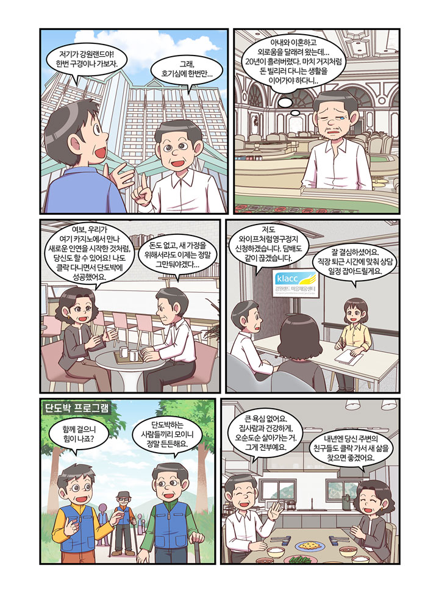

글. 편집실 카툰.유니콘스튜디오
단도박 8개월차 김성준(가명)씨는 20년간 이어진 도박의 늪에서 빠져나와 새로운 삶을 살고 있다. 모든 것을 잃고 바닥까지 내려갔던 그가 다시 일어설 수 있었던 건 재혼한 아내의 변함없는 사랑과 믿음, 그리고 강원랜드 마음채움센터(이하 클락)의 체계적인 지원 덕분이었다. 규칙적인 일상과 건강한 관계를 되찾은 그의 회복 이야기를 들어본다.

경북이 고향인 김성준 씨는 중장비 운전으로 생계를 이어가던 평범한 가장이었다. 그러나 아내와의 이혼으로 삶의 중심을 잃은 그는 어느 날 친구와 함께 태백으로 놀러갔다가 우연히 강원랜드의 존재를 알게 됐다. “처음엔 호기심이었어요. 한 번, 두 번 가다 보니 어느새 20년이라는 세월이 흘러버렸죠.” 가족과 헤어진 후 혼자가 된 그는 카지노에서 외로움을 달래려 했지만, 도박은 그의 삶을 더욱 황폐하게 만들 뿐이었다. 금전적인 문제가 심각해지면서 주변 사람들에게 돈을 빌리는 일이 잦아졌고, 사회생활조차 불편해질 정도로 삶은 피폐해져 갔다. “완전히 거지 같은 생활이었다”고 당시를 회상하는 그의 목소리에는 아직도 그때의 고통이 묻어났다.
김성준 씨에게 전환점이 된 것은 현재의 아내를 만난 일이었다. 강원랜드 인근에서 만난 그녀는 같은 아픔을 가진 사람이었다. 초창기에는 함께 도박을 하기도 했지만, 아내가 먼저 단도박에 성공하면서 상황이 달라졌다. “집사람이 저보다 먼저 단도박을 했어요. 그리고 제가 결심할 때까지 기다려줬죠.” 특히 아내는 클락에서 교육을 받으며 도박중독에서 벗어났고, 그 과정을 통해 얻은 지식과 경험을 바탕으로 남편에게도 센터 방문을 권유했다. 작년 10월, 아내의 강력한 권유와 자신의 간절한 마음이 만나는 순간이 왔다. “돈도 없고, 이제는 정말 도박을 그만둬야겠다는 마음이 간절했어요.” 그는 아내와 함께 클락을 찾아 영구정지를 신청했고, 동시에 담배까지 끊는 도전을 시작했다.
단도박을 결심한 후 김성준 씨는 클락의 체계적인 도움을 받기 시작했다. 정선 지역 자활센터에서 일하게 된 그를 위해 클락의 상담원은 퇴근 시간에 맞춰 교육과 상담을 제공했다. “담당 선생님이 제 직장 생활을 배려해서 시간을 맞춰주셨어요. 그 고마움을 잊을 수가 없죠.” 클락에서 진행하는 교육 과정을 성실히 이수한 그는 ‘뚜벅이’라는 단도박자 모임에도 참여하게 됐다. 매달 한 번씩 열리는 이 모임에서는 산을 오르내리며 서로의 이야기를 나누고, 함께 식사하며 유대감을 쌓았다. “단도박하는 사람들끼리 모여서 서로 힘이 되어주는 거예요.” 교육은 끝났지만 지금도 가끔 클락을 방문해 담당 선생님을 만나며 지속적인 관리를 받고 있다. 클락은 단순히 도박을 끊게 하는 것을 넘어, 새로운 삶을 설계하고 유지할 수 있도록 돕는 든든한 동반자가 되어주었다.
단도박 과정이 순탄하기만 한 것은 아니었다. 도박 욕구와 흡연 욕구가 올라올 때마다 김성준 씨는 독특한 방법으로 이를 극복했다. “다른 사람들은 운동을 한다는데, 저는 잠을 청했어요. 10분이든 20분이든 눈을 감고 견디다 보면 어느새 욕구가 사라지더라고요.” 특히 첫날이 가장 힘들었다고 한다. 하지만 하루만 넘기니 그 다음부터는 수월해졌다. 이제 그의 꿈은 소박하다. “큰 욕심 없어요. 집사람과 건강하게, 오순도순 살아가는 거. 그게 전부예요.” 올해 말까지는 도박하던 시절의 지인들과 거리를 두고, 내년부터는 그들에게도 단도박을 권유할 계획이다. “클락에서 받은 도움을 이제는 다른 사람들에게 나눠주고 싶어요.” 주변 사람들과의 거리두기가 단도박 성공의 첫 번째 비결이라고 강조하는 그는, 자신이 경험한 회복의 기쁨을 더 많은 이들과 나누고 싶다는 바람을 전했다. 김성준 씨의 회복 이야기는 사랑하는 사람의 믿음, 전문기관의 도움, 그리고 자신의 의지가 만나면 불가능해 보이는 일도 가능하다는 것을 보여준다.